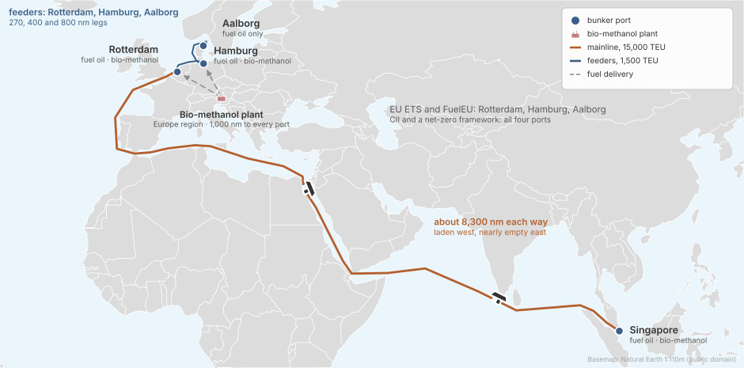
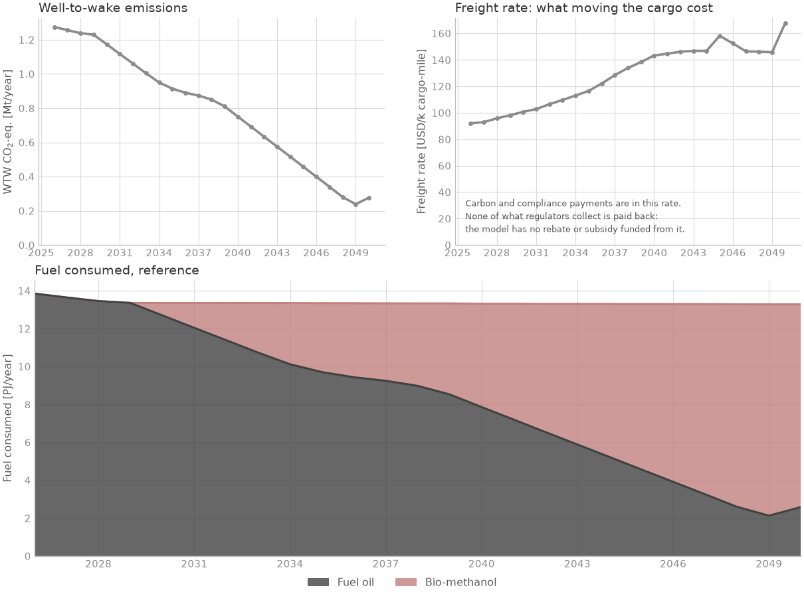

A mainline and its feeders#
Regional networks · deck simulations/examples/example_1/

How do two ship sizes on connected routes choose fuels when the ports supply them unevenly?
The case#

Ships: two fleets on two routes. 5 mainline container ships (~15,000 TEU), four in five on fuel oil, the rest on methanol; 50 feeders (~1,500 TEU), almost all on fuel oil. Both can order or convert to methanol ships.
Routes: the mainline sails Singapore to Rotterdam, 8,300 nm each way in the deck, laden west and nearly empty east; the feeders sail Rotterdam, Hamburg and Aalborg.
Fuels: fuel oil at every port; bio-methanol from a European plant, at every port but Aalborg.
Policy: EU ETS and FuelEU on the three European ports; CII and a net-zero framework on all four, the framework with values that are the deck’s own, not the data library’s.
Horizon: 2026 to 2050, yearly.
Results#

Emissions fall from 1.3 to 0.3 Mt CO2e a year, and alternative fuels make up 80 % of the energy burnt in 2050. Container ships carry TEU, so the freight rate here is per thousand TEU-miles: do not compare it with the bulk carriers’.
The deck#
# SPDX-FileCopyrightText: 2026 Fonden Mærsk Mc-Kinney Møller Center for Zero Carbon Shipping
# SPDX-License-Identifier: CC-BY-4.0
# ------------------------------------------------------------------------------
# SETTING THE SCENE - EXAMPLE 1 (CONTAINER/FEEDER NETWORK)
#
# In this scenario, we follow a shipping company operating a logistics network
# composed of large mainline container vessels and smaller regional feeder ships.
#
# The mainline ships sail a global route between Singapore and Rotterdam, carrying
# international cargo across 11,000 nautical miles. Once in Europe, feeder vessels
# take over the distribution: sailing to Hamburg (a major port with strong infrastructure),
# and Aalborg (a smaller, less-equipped port).
#
# Each vessel type faces different realities — from fuel infrastructure and technology choices
# to emissions regulations and upgrade constraints. The example captures these variations
# through specific assumptions about fuels, fleet aging, emissions policy, and routing.
#
# This case is designed as a step up from basic tutorials. It allows users to explore dynamic
# interactions between fuel switching, regulatory costs, and operational performance
# without the full complexity of large-scale models.
#
# Use the .inc files to explore, adjust, and analyze how vessel behavior changes
# under evolving market and policy conditions.
# ------------------------------------------------------------------------------
DEFINE {
# -------------------------- DEFINITIONS --------------------------
# Import the default model configuration for start
# date and global warming potential lifetime
Load DefaultModelDefinition
# ---------------------------- FLEET ---------------------------
# Define the available vessel options, including
# the composition of the existing fleet
Include "includes/mainlines_curves.inc"
Include "includes/mainlines.inc"
Include "includes/feeders_curves.inc"
Include "includes/feeders.inc"
# ----------------------- ROUTE ------------------------
# Define the routes the vessels are operating on, including the
# bunker price of fossil fuels and handling costs in ports
Include "includes/route.inc"
Include "includes/ports.inc"
Include "includes/bunker_logistics.inc"
# --------------------------- FUEL -----------------------------
# Define the fuel plants that can be built
# to meet the demand signals from the fleet
Include "includes/fuel_production.inc"
Include "includes/regions.inc"
Include "includes/producer.inc"
Load DefaultEmission
# ------------------------ REGULATION --------------------------
# We also have to take into account the different regulations in place
# in the operating areas. These include the FuelEU, Cii, NZF and EU ETS.
Include "includes/cii.inc"
Include "includes/eu_ets.inc"
Include "includes/fuel_eu.inc"
Include "includes/net_zero_framework.inc"
# ---------------- DECISION PROCESESS ---------------------------
Include "includes/decision_processes.inc"
# -----------------------EXPORT -----------------------------
Include "includes/report.inc"
# -------------------------- OUTPUT -----------------------------
Load DefaultPlot
}
EVENTS {
# time-steps
Load DefaultTimeStepYearly
}
# SPDX-FileCopyrightText: 2026 Fonden Mærsk Mc-Kinney Møller Center for Zero Carbon Shipping
# SPDX-License-Identifier: CC-BY-4.0
# ---------------------------- CONTAINER FLEET --------------------------------------
#
# This file defines the mainline container fleet used in the scenario, which operates
# along the long-haul route between Singapore and Rotterdam — a key global trade corridor.
#
# The fleet begins with a number of oil-fueled vessel nearing the end of their operational life
# creating a decision point: should the company reinvest in traditional fossil ships or
# transition to methanol as a low-emission alternative?
#
# This setup enables analysis of fuel transition timing, cost impacts, and emissions
# trade-offs across the life cycle of long-haul container shipping.
#
# ----------------------------------------------------------------------------------
Copy Vessel "container_15000_teu_ice_oil" "mainline_oil"
Copy Vessel "container_15000_teu_ice_methanol" "mainline_methanol"
Fleet "mainlines" {
# Vessel types
Vessels = [Vessel("mainline_oil"),
Vessel("mainline_methanol")]
# Initial conditions - i.e. how many vessels of which type and age
InitialVessels = 5
InitialSplit = [0.800,
0.200]
InitialAgeDistribution = [
Curve("age_dist_mainlines_oil"),
Curve("age_dist_mainlines_methanol")
]
# Trade growth: annual growth rate of 5%, but can be changed if expected otherwise or disabled to keep constant.
# TradeGrowth = 0.05
# Fuel conversion cost: defined for future retrofit from oil to methanol
set_fuel_conversion_cost("mainline_oil", "mainline_methanol", 24.3e6)
# Speed management: enabled to allow adjustments in operational behavior
AllowSpeedManagement = TRUE # or TRUE
MaximumSpeedChange = 0.5
}
# SPDX-FileCopyrightText: 2026 Fonden Mærsk Mc-Kinney Møller Center for Zero Carbon Shipping
# SPDX-License-Identifier: CC-BY-4.0
# -------------------------------- FEEDER FLEET ---------------------------------------
#
# This file defines the feeder fleet used in the example, with vessels representing
# the regional distribution layer of the transport network.
#
# Operating from Rotterdam to ports like Hamburg and Aalborg, they must navigate both
# infrastructure limitations and stricter European regulations. Their smaller size and
# operational context reflect the challenges and opportunities of short-sea shipping.
#
# -------------------------------------------------------------------------------------
Copy Vessel "container_1500_teu_ice_oil" "feeder_oil"
Copy Vessel "container_1500_teu_ice_methanol" "feeder_methanol"
Fleet "feeders" {
# Vessel types
Vessels = [Vessel("feeder_oil"),
Vessel("feeder_methanol")]
# Initial conditions - i.e. how many vessels of which type and age
InitialVessels = 50
InitialSplit = [0.96,
0.04]
InitialAgeDistribution = [
Curve("age_dist_feeders_oil"),
Curve("age_dist_feeders_methanol")
]
# Trade growth: annual growth rate of 5%, but can be changed if expected otherwise or disabled to keep constant.
# TradeGrowth = 0.05
# Fuel conversion cost: defined for future retrofit from oil to methanol
set_fuel_conversion_cost("feeder_oil", "feeder_methanol", 10.3e6)
# Speed management: enabled to allow adjustments in operational behavior
AllowSpeedManagement = FALSE # or TRUE
MaximumSpeedChange = 0.5
}
# SPDX-FileCopyrightText: 2026 Fonden Mærsk Mc-Kinney Møller Center for Zero Carbon Shipping
# SPDX-License-Identifier: CC-BY-4.0
# Curve definitions for initial age distributions and technology shares
Curve "age_dist_mainlines_oil" {
Table = [
0 0
1 0
2 0
3 0.25
4 0
5 0
6 0.25
7 0
8 0
9 0.25
10 0
11 0
12 0.25
13 0
14 0
15 0
16 0
17 0
18 0
19 0
20 0
21 0
22 0
23 0
24 0
]
}
Curve "age_dist_mainlines_methanol" {
Table = [
0 1
1 0
2 0
3 0
4 0
5 0
6 0
7 0
8 0
9 0
10 0
11 0
12 0
13 0
14 0
15 0
16 0
17 0
18 0
19 0
20 0
21 0
22 0
23 0
24 0
]
}
# SPDX-FileCopyrightText: 2026 Fonden Mærsk Mc-Kinney Møller Center for Zero Carbon Shipping
# SPDX-License-Identifier: CC-BY-4.0
# Curve definitions for initial age distributions and technology shares
Curve "age_dist_feeders_oil" {
Table = [
0 0.04
1 0.04
2 0.04
3 0.04
4 0.04
5 0.04
6 0.04
7 0.04
8 0.04
9 0.04
10 0.04
11 0.04
12 0.04
13 0.04
14 0.04
15 0.04
16 0.04
17 0.04
18 0.04
19 0.04
20 0.04
21 0.04
22 0.04
23 0.04
24 0.04
]
}
Curve "age_dist_feeders_methanol" {
Table = [
0 0.5
1 0
2 0.5
3 0
4 0
5 0
6 0
7 0
8 0
9 0
10 0
11 0
12 0
13 0
14 0
15 0
16 0
17 0
18 0
19 0
20 0
21 0
22 0
23 0
24 0
]
}
# SPDX-FileCopyrightText: 2026 Fonden Mærsk Mc-Kinney Møller Center for Zero Carbon Shipping
# SPDX-License-Identifier: CC-BY-4.0
# ------------------------------ ROUTE -------------------------------------------
#
# This file defines the key transport routes in the example, covering:
# - A long-haul mainline route between Singapore and Rotterdam
# - A regional feeder roundtrip connecting Rotterdam, Hamburg, and Aalborg
#
# Each route includes realistic assumptions on distance, sailing time, vessel loading,
# port durations, and operational conditions—capturing both global and short-sea dynamics
# within the same logistics network.
#
# --------------------------------------------------------------------------------
# Singapore to Rotterdam
# This long-haul round trip is operated by the mainline container vessel (~15,000 TEU).
# It covers approximately 8,300 nautical miles each way and includes turnaround time
# at both ends. Cargo is loaded from Singapore and returns almost empty from Europe.
Vessel "mainline_*" {
Route = Route("mainline_route")
}
Vessel "feeder_*" {
Route = Route("feeder_route")
}
Route "mainline_route" {
RouteType = ROUND_TRIP
Ports = [Port("singapore"), Port("rotterdam")]
PortDurations = [1.5, 1.0]
Distances = [8300, 8300]
Speeds = [15.5, 14.2]
# Fully laden outbound, almost empty return
CapacityUtilizations = [0.95, 0.1]
}
# Rotterdam to Hamburg to Aalborg
# This regional short-sea route connects Rotterdam with Hamburg and Aalborg.
# It is operated by 1,500 TEU feeder vessels.
#
# Hamburg, a major container port with advanced infrastructure, supports early adoption of alternative fuels.
# Aalborg, while smaller and less developed, represents a realistic challenge in fuel access and port services.
Route "feeder_route" {
RouteType = ROUND_TRIP
Ports = [Port("rotterdam"), Port("hamburg"), Port("aalborg")]
PortDurations = [1.5, 1.0, 1.0]
Distances = [270, 400, 800]
Speeds = [13.0, 12.5, 13.0]
# Full outbound, partial mid-leg, empty return
CapacityUtilizations = [1.0, 0.7, 0.0]
}
# SPDX-FileCopyrightText: 2026 Fonden Mærsk Mc-Kinney Møller Center for Zero Carbon Shipping
# SPDX-License-Identifier: CC-BY-4.0
# ---------------------------- PORTS --------------------------------------------------
#
# This file defines the key ports used in the example: one in Asia (Singapore)
# and multiple in Europe (Rotterdam, Hamburg, and Aalborg).
#
# These ports play a central role in shaping fuel availability and infrastructure limitations.
# While major ports like Rotterdam and Singapore are equipped to handle a range of fuels
# (including low-sulfur oil and bio-methanol), smaller ports like Aalborg may face
# delays or be unable to adopt alternative fuel infrastructure.
#
# -------------------------------------------------------------------------------------
Port "singapore" {
set_bunkering_allowed("methanol_bio", TRUE)
}
Port "rotterdam" {
set_bunkering_allowed("methanol_bio", TRUE)
}
Port "hamburg" {
set_bunkering_allowed("methanol_bio", TRUE)
}
Port "aalborg" {
# Test how bio-methanol not being possible in Aalborg affects the output.
set_bunkering_allowed("methanol_bio", FALSE)
}
Port "*" {
set_bunkering_allowed("fossil_fuel_oil", TRUE)
# Here we set the price and upstream emissions of LSFO as we don't calculate it bottom up.
set_bunker_price_overwrite("fossil_fuel_oil", Forecast("fossil_fuel_oil_price_global"))
set_bunker_wtt_overwrite("fossil_fuel_oil", "carbon_dioxide", Forecast("fossil_fuel_oil_wtt_carbon_dioxide"))
set_handling_cost("fossil_fuel_oil", Variable("handling_cost_oil"))
set_handling_cost("methanol_bio", Variable("handling_cost_methanol"))
}
# Here you can change the handling cost of oil and methanol
Variable "handling_cost_oil" {
Value = 8
}
Variable "handling_cost_methanol" {
Value = 18
}
# SPDX-FileCopyrightText: 2026 Fonden Mærsk Mc-Kinney Møller Center for Zero Carbon Shipping
# SPDX-License-Identifier: CC-BY-4.0
# --------------------- BUNKER LOGISTICS -------------------------------------
#
# This file defines the cost assumptions related to transporting fuel from a
# given production region to a bunker hub (port).
#
# In this case, fossil fuel oil is treated as a liquid market fuel —
# widely available, with mature infrastructure and low delivery uncertainty.
# For alternative fuels like bio-methanol, the cost and complexity of bunkering
# can vary significantly depending on the port and supporting infrastructure.
#
# To keep the model streamlined and educational, fuel transport distances
# and costs have been generalized, reflecting typical conditions
# rather than port-specific variations.
#
# These parameters influence the total cost of fuel supply and are important
# when comparing fossil fuels to emerging alternatives under realistic constraints.
#
# ---------------------------------------------------------------------------
BunkerLogistics {
LiquidMarketFuels = [Fuel("fossil_fuel_oil")]
set_distance("*", "*", 1000)
set_transport_cost("*", 0.1)
}
# SPDX-FileCopyrightText: 2026 Fonden Mærsk Mc-Kinney Møller Center for Zero Carbon Shipping
# SPDX-License-Identifier: CC-BY-4.0
# ---------------------------------- FUEL PRODUCTION --------------------------------------
#
# This file includes all components related to the production of fuels used in the example.
# It covers both conventional marine fuels and a renewable alternative, along with their
# associated production processes and feedstocks.
#
# The producer and regional differences are defined in the .inc files producer.inc and regions.inc
#
# ----------------------------------------------------------------------------------------
# LSFO
# Standard fossil fuel used in global shipping
Import Fuel "fossil_fuel_oil"
# Bio-Methanol
# Low-emission methanol produced from sustainable biomass. Enables compliance with EU regulations
# and allows fuel-switching behavior in both feeder and mainline vessels.
Import Fuel "methanol_bio"
# Methanol production facilities located in Europe
Import Plant "plant_methanol_bio_gasification"
Plant "plant_methanol_bio_gasification" {
Region = Region("europe")
Source = Source("grid")
# as default_plant.inc sets it for a bio plant in Europe; without it, 0 %
CostOfCapital = Forecast("cost_of_capital_plant_bio_europe")
Capacity = Forecast("methanol_bio_gasification_plant_capacity")
}
# Methanol synthesis process feedstock
Import Process "methanol_synthesis_bio_gasification"
Import Feedstock "feedstock_biomethanol_gasification"
# Electricity Source
# Fuel production in both regions draws electricity from the connected power grid.
Import Source "grid"
# Overwritten from the default values due to our smaller scenario
Forecast "methanol_bio_gasification_plant_capacity" {
Table = [
"01-01-2030" 100
"01-01-2050" 100
]
Extrapolate = LINEAR
}
# SPDX-FileCopyrightText: 2026 Fonden Mærsk Mc-Kinney Møller Center for Zero Carbon Shipping
# SPDX-License-Identifier: CC-BY-4.0
# ------------------------------------ REGIONS -------------------------------------
#
# This file defines the geographic region in which fuel production takes place.
#
# The region plays a role in the upstream (WTT) part of the fuel supply chain,
# affecting the overall cost and environmental impact of fuel production and delivery.
#
# These regional settings are used to calculate the lifecycle emissions and cost differences
# for fuels such as bio-methanol, depending on where they are produced and consumed.
#
# ----------------------------------------------------------------------------------
Region "europe" {
# set region specific source cost
set_source_opex("grid", Forecast("electricity_cost_europe_mid"))
# set region specific feedstock cost
set_feedstock_cost("feedstock_biomethanol_gasification", Forecast("feedstock_biomethanol_gasification_cost"))
# set region specific grid emissions
set_source_wtt("grid", "carbon_dioxide", Forecast("grid_emissions_europe"))
}
Region "*" {
set_transport_cost("truck", 0.0)
set_transport_wtt("truck", "carbon_dioxide", Forecast("truck_emissions"))
# Bio-methanol
# The cost (OPEX, CAPEX) as well as emissions can be changed, altering the fuel production cost.
set_process_capex("methanol_synthesis_bio_gasification", Forecast("methanol_synthesis_bio_gasification_capex"))
set_process_opex("methanol_synthesis_bio_gasification", Forecast("methanol_synthesis_bio_gasification_opex"))
set_process_energy("methanol_synthesis_bio_gasification", Forecast("methanol_synthesis_bio_gasification_energy"))
set_process_wtt("methanol_synthesis_bio_gasification", "carbon_dioxide", <-Variable("carbon_dioxide_per_methanol")>)
}
Import Transport "truck"
# SPDX-FileCopyrightText: 2026 Fonden Mærsk Mc-Kinney Møller Center for Zero Carbon Shipping
# SPDX-License-Identifier: CC-BY-4.0
# ------------------------------ PRODUCER ----------------------------------------------
#
# This block defines the bio-methanol producer entity responsible for fuel supply
# across European demand centers. It links to a dedicated plant and is subject to
# regional feedstock constraints, which limit production scale and growth potential.
#
# -------------------------------------------------------------------------------------
Producer "producer_methanol_bio" {
Plants = [Plant("plant_methanol_bio_gasification")]
MaximumDevelopment = 1
set_feed_constraint("feedstock_biomethanol_gasification", Forecast("feedstock_biomethanol_gasification_constraint"))
}
# This forecast is simply for a single European producer instead of on a global scale.
# These numbers can be changed if a lower availability is expected.
Forecast "feedstock_biomethanol_gasification_constraint" {
Table = [
"01-01-2025" 0.03e6
"01-01-2030" 0.15e6
"01-01-2035" 0.90e6
"01-01-2040" 1.14e6
"01-01-2045" 1.26e6
"01-01-2050" 1.38e6
]
Extrapolate = LINEAR
}
# SPDX-FileCopyrightText: 2026 Fonden Mærsk Mc-Kinney Møller Center for Zero Carbon Shipping
# SPDX-License-Identifier: CC-BY-4.0
# ------------------ CARBON INTENSITY INDICATOR ---------------------------
#
# Tracks compliance of international container ships with IMO’s CII rule
# based on CO₂ per transport work (TTW). Used here for monitoring only,
# with no effect on decision-making (remedial cost = 0).
#
# -----------------------------------------------------------------------
Regulation "cii" {
Measure = TRANSPORT_NOMINAL
Scheme = INDIVIDUAL
Scope = TTW
IncludeSlip = FALSE
Emissions = Emission("carbon_dioxide")
Fuels = Fuel("*")
Jurisdiction = [Port("singapore"), Port("rotterdam"), Port("hamburg"), Port("aalborg")]
# A remedial cost of zero means the regulation will have no influence on the decision making.
# The CII regulation is purely included to track the compliance with the regulation in the output.
RemedialCost = 0
# CII applies to all vessels in this scenario
set_include_vessel("*", TRUE)
# assign regulation specific emission factors according to MEPC308(73) for EEDI index
set_fuel_ttw("fossil_fuel_oil", "carbon_dioxide", 3.114)
# there was an interim guideline at MEPC80 for how to calculate EF for CII for bio-fuels. This said that:
# EF = LHV * (1 - p) * 94 if and only if p >= 0.65
# using the assumption that all our bio-fuels are 0.65> in terms of WTW emissions, then we can assign the Navigate WTW (2030) as the regulation TTW
set_fuel_ttw("methanol_bio", "carbon_dioxide", 0.3)
set_vessel_threshold("feeder_*", Forecast("cii_target_container_1500_teu"))
set_vessel_threshold("mainline_*", Forecast("cii_target_container_15000_teu"))
set_vessel_capacity("feeder_*", 22000)
set_vessel_capacity("mainline_*", 160000)
}
Forecast "cii_target_reduction" {
Table = [
"01-01-2019" 1.0
"01-01-2020" 0.99
"01-01-2021" 0.98
"01-01-2022" 0.97
"01-01-2023" 0.95
"01-01-2024" 0.93
"01-01-2025" 0.91
"01-01-2026" 0.89
"01-01-2027" 0.87
"01-01-2028" 0.85
"01-01-2029" 0.83
"01-01-2030" 0.81
]
Extrapolate = FLAT
}
Copy Forecast "cii_target_reduction" "cii_target_container_1500_teu"
Copy Forecast "cii_target_reduction" "cii_target_container_15000_teu"
Forecast "cii_target_container_1500_teu" {
Multiplier = 14.93
}
Forecast "cii_target_container_15000_teu" {
Multiplier = 5.66
}
# SPDX-FileCopyrightText: 2026 Fonden Mærsk Mc-Kinney Møller Center for Zero Carbon Shipping
# SPDX-License-Identifier: CC-BY-4.0
# --------------------------------- EU ETS REGULATION -----------------------------------
#
# This regulation models the EU Emissions Trading System (ETS) as applied to shipping.
# It covers CO₂, CH₄, and N₂O emissions from vessels operating within or entering EU ports.
#
# Domestic (intra-EU) voyages are fully covered, while international (inter-EU) voyages are
# partially covered, with emissions priced via forecasted carbon credit values.
#
# Bio-methanol is assumed to be zero-rated for CO₂ under RED criteria, while methane and
# nitrous oxide are priced using “worst-in-class” emission factors.
#
# ---------------------------------------------------------------------------------------
Regulation "eu_ets" {
Measure = ABSOLUTE
Scheme = INDIVIDUAL
Scope = TTW
IncludeSlip = FALSE # accounted for through TTW methane emission factors
Emissions = [Emission("carbon_dioxide"), Emission("methane"), Emission("nitrous_oxide")]
Fuels = Fuel("*")
IntraFraction = 1
InterFraction = 0.5
ExtraFraction = 0
Jurisdiction = [Port("rotterdam"), Port("hamburg"), Port("aalborg")]
RemedialCost = <Forecast("eu_ets_carbon_credit_price") * Forecast("eu_ets_maritime_phase_in")>
set_vessel_threshold("*", 0.)
# EU ETS applies to both domestic and international vessels that enter or operate in the EU
set_include_vessel("*", TRUE)
# Global warming potentials
set_global_warming_potential("carbon_dioxide", 1)
set_global_warming_potential("methane", 28)
set_global_warming_potential("nitrous_oxide", 265)
# DEFAULT EMISSION FACTORS
# EU ETS emission factors are based on MRV Maritime Regulation Annex I.
# All bio and electro fuels are assumed to have a proven >65% reduction relative to LSFO and thus meet the
# criteria for "zero-rated" which means the fuel is classified with zero carbon dioxide emissions.
# Blue ammmonia is assumed to have a proven >70% reduction and thus be classed as a "low-carbon fuel" which
# also meets the crtieria for being "zero-rated" (RED Implemementing Regulation 2018/2066 Article 23c (c)).
# The "zero-rated" does not apply to methane and nitrous oxide which for bio and electro are all defined
# as TBM (to be measured) and for blue either TBM or N/A (not applicable). In this case they should use the
# "highest in class" value which for all fuels correspond to methane emissions of 0.00005 and nitrous oxide
# emissions of 0.00018.
# Fuel oil
set_fuel_ttw("fossil_fuel_oil", "carbon_dioxide", Variable("eu_default_diesel_carbon_dioxide"))
set_fuel_ttw("fossil_fuel_oil", "methane", <Variable("eu_default_diesel_ice_methane") * Forecast("eu_ets_ghg_phase_in")>)
set_fuel_ttw("fossil_fuel_oil", "nitrous_oxide", <Variable("eu_default_diesel_ice_nitrous_oxide") * Forecast("eu_ets_ghg_phase_in")>)
# Bio-methanol
set_fuel_ttw("methanol_bio", "carbon_dioxide", 0)
set_fuel_ttw("methanol_bio", "methane", <Variable("eu_default_diesel_ice_methane") * Forecast("eu_ets_ghg_phase_in")>)
set_fuel_ttw("methanol_bio", "nitrous_oxide", <Variable("eu_default_diesel_ice_nitrous_oxide") * Forecast("eu_ets_ghg_phase_in")>)
}
# SPDX-FileCopyrightText: 2026 Fonden Mærsk Mc-Kinney Møller Center for Zero Carbon Shipping
# SPDX-License-Identifier: CC-BY-4.0
# ---------------------------------- FUEL EU ---------------------------------------------
#
# This block represents the FuelEU Maritime regulation, which limits GHG intensity of fuels
# used in EU waters. It applies fully to regional feeder routes and partially to the mainline
# route (Singapore–Rotterdam).
#
# The policy promotes low-emission fuels like bio-methanol and penalizes fossil fuels,
# helping simulate regulatory impact on fuel choice and compliance costs.
#
# ---------------------------------------------------------------------------------------
Regulation "fuel_eu" {
Measure = INTENSITY
Scheme = FLEXIBLE
Scope = WTW
IncludeSlip = FALSE # accounted for through TTW methane emission factors
Emissions = [Emission("carbon_dioxide"), Emission("methane"), Emission("nitrous_oxide")]
Fuels = Fuel("*")
IntraFraction = 1
InterFraction = 0.5
ExtraFraction = 0
Jurisdiction = [Port("rotterdam"), Port("hamburg"), Port("aalborg")]
RemedialCost = Variable("fuel_eu_remedial_cost")
SharedThreshold = Forecast("fuel_eu_target_reduction")
# FuelEU applies to both the feeders operating in EU and the mainline entering the EU.
set_include_vessel("*", TRUE)
# Global warming potentials
set_global_warming_potential("carbon_dioxide", 1)
set_global_warming_potential("methane", 25)
set_global_warming_potential("nitrous_oxide", 298)
# Fuel oil
set_fuel_wtt("fossil_fuel_oil", "*", 0) # this overwrites the Navigate calculation of WTT
set_fuel_wtt("fossil_fuel_oil", "carbon_dioxide", Variable("fuel_eu_default_wtt_fossil_fuel_oil"))
set_fuel_ttw("fossil_fuel_oil", "carbon_dioxide", Variable("eu_default_diesel_carbon_dioxide"))
set_fuel_ttw("fossil_fuel_oil", "methane", Variable("eu_default_diesel_ice_methane"))
set_fuel_ttw("fossil_fuel_oil", "nitrous_oxide", Variable("eu_default_diesel_ice_nitrous_oxide"))
# Bio-methanol
set_fuel_wtt("methanol_bio", "*", 0) # this overwrites the Navigate calculation of WTT
set_fuel_wtt("methanol_bio", "carbon_dioxide", Variable("fuel_eu_default_wtt_methanol_bio"))
set_fuel_ttw("methanol_bio", "carbon_dioxide", Variable("fuel_eu_default_methanol_ice_carbon_dioxide"))
set_fuel_ttw("methanol_bio", "methane", Variable("eu_default_diesel_ice_methane"))
set_fuel_ttw("methanol_bio", "nitrous_oxide", Variable("eu_default_diesel_ice_nitrous_oxide"))
}
# SPDX-FileCopyrightText: 2026 Fonden Mærsk Mc-Kinney Møller Center for Zero Carbon Shipping
# SPDX-License-Identifier: CC-BY-4.0
# -------------------------- NET ZERO FRAMEWORK REGULATIONS --------------------------
#
# Implements an interpretation of the IMO Net Zero Framework (January 2026).
# Defines a well-to-wake (WTW) emissions intensity pathway aligned with net-zero goals.
# Applies across fuels and vessel types, with adjustable scope, jurisdiction, and coverage.
#
# -------------------------------------------------------------------------------------
Regulation "net_zero_framework" {
Measure = INTENSITY
Scheme = FLEXIBLE
Scope = WTW
IncludeSlip = TRUE
Emissions = Emission("*")
Fuels = Fuel("*")
Jurisdiction = [Port("singapore"), Port("rotterdam"), Port("hamburg"), Port("aalborg")]
RemedialCost = Forecast("net_zero_framework_remedial")
SharedThreshold = Forecast("net_zero_framework_z_values")
set_include_vessel("*", TRUE)
}
Forecast "net_zero_framework_z_values" {
Table = [
"01-01-2025" 1.00
"31-12-2027" 1.00
"01-01-2028" 0.96
"01-01-2029" 0.94
"01-01-2030" 0.92
"01-01-2031" 0.876
"01-01-2032" 0.832
"01-01-2033" 0.788
"01-01-2034" 0.744
"01-01-2035" 0.70
"01-01-2040" 0.35
"01-01-2050" 0.05
]
Multiplier = 93.3
Extrapolate = FLAT
}
# Here you can change the remedial cost
Forecast "net_zero_framework_remedial" {
Table = [
"01-01-2025" 0
"31-12-2027" 0
"01-01-2028" 380
]
Extrapolate = FLAT
}
# SPDX-FileCopyrightText: 2026 Fonden Mærsk Mc-Kinney Møller Center for Zero Carbon Shipping
# SPDX-License-Identifier: CC-BY-4.0
# --------------------------- DECISION PROCESSES ----------------------------------
#
# This file defines how quickly the fleet and producers can adopt new fuels or technologies
# over time. These settings act as behavioral levers, influencing the model’s flexibility
# in switching between fuels or retrofitting ships.
#
# -----------------------------------------------------------------------------------
Fleet "*" {
# Decision sensitivities for newbuilds (odds ratios; LCOT is lower-is-better, so use a value below 1)
InterFuelSensitivity = 0.5 # Between fuel types: a 10% higher LCOT halves the odds
IntraFuelSensitivity = 0.5 # Within a single fuel type
# Sensitivity for fuel conversions (NPV vs ship CAPEX; higher-is-better, so use a value above 1)
FuelConversionSensitivity = 2
}
Producer "producer_methanol_bio" {
# Decision sensitivities for split between plants
FuelDemandSensitivity = 1.25 # Between fuel pathways: a 10% higher expected demand gives 1.25x the odds
FuelCostSensitivity = 0.5 # Within a pathway: a 10% higher LCoF halves the odds
}
# SPDX-FileCopyrightText: 2026 Fonden Mærsk Mc-Kinney Møller Center for Zero Carbon Shipping
# SPDX-License-Identifier: CC-BY-4.0
# ------------------------------- EXPORT --------------------------------------
#
# This file defines the attributes from the example that are
# exported to an excel file.
#
# ---------------------------------------------------------------------------
Report "output" {
Directory = "./plots"
add_port_property("*", BunkerIntensityPrice)
}
Build it with an AI assistant#
The prompt below rebuilds this deck exactly: an assistant that saw only the prompt reproduced its results to the tonne. The deck’s own numbers are in it as the person’s numbers, marked GIVEN, so they are not a source. A network of connected routes starts from it. Session 5 shows how to use it.
Full prompt for this case
The study. The deck simulations/examples/example_1, rebuilt from a prompt:
5 container ships of 15,000 TEU on a Singapore - Rotterdam mainline, and 50
feeders of 1,500 TEU on a Rotterdam - Hamburg - Aalborg loop, 2026 to 2050,
under CII, EU ETS, FuelEU Maritime and a net-zero framework. Both fleets can
burn fuel oil or bio-methanol, made in Europe; Aalborg sells no bio-methanol. The
question is how two ship sizes on connected routes choose fuels when the ports
supply them unevenly.
What comes from the library. The four container ship designs, the fuels, the bio-methanol process, its feedstock and their costs, fuel oil’s price and upstream emissions, electricity and grid emissions in Europe, the EU ETS price and phase-in, FuelEU’s target and default emission factors.
What is GIVEN. Everything else is the example deck’s own: the fleet sizes and ages, the routes, the bunker logistics, the handling costs, the plant capacity, the producer’s feedstock ceiling, the conversion costs, the regulations’ settings and the net-zero framework’s targets and price. The prompt gives them as the person’s numbers, so the build uses them as they are; none is a source.
Limits. A few ships per fleet, not a market segment: Navigate decides in
fractions of ships. The .nav header of example_1 says 11,000 nm; its route,
which this prompt follows, says 8,300 nm.
Tested: 2026-10-30, built cold on Sonnet and on Haiku: both decks ran with no warnings and reproduce example_1 to the tonne. The plant then gained the library’s cost of capital (it was financed at 0 %), and the wording was fixed from the builders’ notes; built cold again on Haiku, it reproduces the new deck to the tonne: 1,274,745 t CO2e in 2026, 914,092 t in 2035 and 276,588 t in 2050, when bio-methanol is 10.69 PJ of the 13.28 PJ burnt.
You are helping me build a simulation study for Navigate, the shipping
decarbonisation model. Write the files yourself; do not only
describe them.
Before writing anything, find the Navigate repository on my machine (a folder
usually named navigate-zcs; ask me where it is if you cannot find it), then read
docs/workshop/building-a-deck.md in it and follow it. It
says how Navigate works, how to run a deck and read its results, and the rules
every deck follows. This prompt gives the case.
This case rebuilds the example deck simulations/examples/example_1 from this
prompt; you may read that deck. Every number below is mine: use it as given and
mark it GIVEN. The fleets are a few ships on purpose. You should not need to
invent anything: if you do, tell me what was missing.
THE DECK
A new folder, simulations/user/mainline_feeders/, with mainline_feeders.nav and
these files in includes/, included in this order: mainlines_curves.inc,
mainlines.inc, feeders_curves.inc, feeders.inc, route.inc, ports.inc,
bunker_logistics.inc, fuel_production.inc, regions.inc, producer.inc, then
Load DefaultEmission, then cii.inc, eu_ets.inc, fuel_eu.inc,
net_zero_framework.inc, decision_processes.inc, report.inc.
DEFINE starts with Load DefaultModelDefinition and ends with Load DefaultPlot;
EVENTS holds Load DefaultTimeStepYearly only. You may add Load DefaultReport to
read the results. Load nothing else: no DefaultRegulation, no
DefaultBunkerLogistics, no DefaultCalibration (decision_processes.inc holds
the deck's own).
THE CASE
A container network, 2026 to 2050, yearly steps: mainline ships from Singapore
to Rotterdam, and feeders from Rotterdam to Hamburg and Aalborg. Fuels: fuel oil
and bio-methanol, made in Europe.
FLEETS
- Fleet "mainlines": Copy Vessel container_15000_teu_ice_oil to mainline_oil and
container_15000_teu_ice_methanol to mainline_methanol. 5 ships, split 0.8 oil,
0.2 methanol. Ages (Curves age_dist_mainlines_oil and
age_dist_mainlines_methanol, one row per age 0 to 24, 0 where not listed):
oil 0.25 at ages 3, 6, 9 and 12; methanol 1 at age 0.
set_fuel_conversion_cost("mainline_oil", "mainline_methanol", 24.3e6).
AllowSpeedManagement = TRUE, MaximumSpeedChange = 0.5. No TradeGrowth line.
- Fleet "feeders": Copy Vessel container_1500_teu_ice_oil to feeder_oil and
container_1500_teu_ice_methanol to feeder_methanol. 50 ships, split 0.96 oil,
0.04 methanol. Ages (Curves age_dist_feeders_oil and
age_dist_feeders_methanol): oil 0.04 at every age 0 to 24; methanol 0.5 at
ages 0 and 2. set_fuel_conversion_cost("feeder_oil", "feeder_methanol",
10.3e6). AllowSpeedManagement = FALSE, MaximumSpeedChange = 0.5. No
TradeGrowth line.
- Decision processes, for Fleet "*": InterFuelSensitivity 0.5,
IntraFuelSensitivity 0.5, FuelConversionSensitivity 2. For
producer_methanol_bio: FuelDemandSensitivity 1.25, FuelCostSensitivity 0.5.
ROUTES (Vessel "mainline_*" and Vessel "feeder_*" each set their Route)
- mainline_route: ROUND_TRIP, singapore - rotterdam; PortDurations 1.5, 1.0;
Distances 8300, 8300; Speeds 15.5, 14.2; CapacityUtilizations 0.95, 0.1.
- feeder_route: ROUND_TRIP, rotterdam - hamburg - aalborg; PortDurations 1.5,
1.0, 1.0; Distances 270, 400, 800; Speeds 13.0, 12.5, 13.0;
CapacityUtilizations 1.0, 0.7, 0.0.
PORTS
- methanol_bio may be bunkered at singapore, rotterdam and hamburg, not at
aalborg; fossil_fuel_oil at every port.
- At every port (Port "*"): fuel oil's bunker price is overwritten with
Forecast fossil_fuel_oil_price_global and its upstream CO2 with Forecast
fossil_fuel_oil_wtt_carbon_dioxide; handling cost Variable handling_cost_oil
= 8 and Variable handling_cost_methanol = 18 (declare both: the library has
neither).
- BunkerLogistics: fossil_fuel_oil is the only liquid market fuel;
set_distance("*", "*", 1000); set_transport_cost("*", 0.1).
FUEL PRODUCTION
- Import Fuel fossil_fuel_oil and methanol_bio; Import Source grid; Import
Process methanol_synthesis_bio_gasification; Import Feedstock
feedstock_biomethanol_gasification; Import Transport truck.
- Import Plant plant_methanol_bio_gasification and set its Region europe, Source
grid, and Capacity = Forecast methanol_bio_gasification_plant_capacity, which
you declare in the deck with my values, 100 in 2030 and 100 in 2050,
extrapolated linearly (it replaces the library's Forecast of that name), and
CostOfCapital = Forecast cost_of_capital_plant_bio_europe.
- Region "europe", declared (not imported), with three lines: source opex of
grid = electricity_cost_europe_mid; feedstock cost of
feedstock_biomethanol_gasification = feedstock_biomethanol_gasification_cost;
source WTT CO2 of grid = grid_emissions_europe.
- Region "*": truck transport cost 0, truck CO2 = truck_emissions;
methanol_synthesis_bio_gasification capex, opex and energy from the Forecasts
of the same name with _capex, _opex, _energy; its process CO2 =
-Variable carbon_dioxide_per_methanol.
- Producer "producer_methanol_bio": that one plant, MaximumDevelopment 1, feed
constraint on feedstock_biomethanol_gasification = Forecast
feedstock_biomethanol_gasification_constraint, which you declare (the library
has none): 0.03e6 in 2025, 0.15e6 in
2030, 0.90e6 in 2035, 1.14e6 in 2040, 1.26e6 in 2045, 1.38e6 in 2050,
extrapolated linearly.
POLICY (each Regulation written in full, not copied from the library; each has
Fuels = Fuel("*") and set_include_vessel("*", TRUE))
- cii: TRANSPORT_NOMINAL, INDIVIDUAL, TTW, IncludeSlip FALSE, CO2 only, all four
ports, RemedialCost 0 (it only tracks compliance). TTW CO2 3.114 for
fossil_fuel_oil and 0.3 for methanol_bio. Thresholds: Forecast
cii_target_reduction (1.0 in 2019, 0.99, 0.98, 0.97, 0.95, 0.93, 0.91, 0.89,
0.87, 0.85, 0.83, 0.81 in 2030, one per year on 1 January, flat after),
copied to cii_target_container_1500_teu (Multiplier 14.93) for feeder_* and
to cii_target_container_15000_teu (Multiplier 5.66) for mainline_*. Vessel
capacity 22000 for feeder_* and 160000 for mainline_*.
- eu_ets: ABSOLUTE, INDIVIDUAL, TTW, IncludeSlip FALSE; CO2, methane, N2O;
IntraFraction 1, InterFraction 0.5, ExtraFraction 0; rotterdam, hamburg,
aalborg; RemedialCost = eu_ets_carbon_credit_price x eu_ets_maritime_phase_in;
set_vessel_threshold("*", 0.); GWP 1, 28, 265. TTW factors: fuel oil CO2 =
Variable eu_default_diesel_carbon_dioxide; fuel oil and methanol_bio methane =
eu_default_diesel_ice_methane x Forecast eu_ets_ghg_phase_in, N2O =
eu_default_diesel_ice_nitrous_oxide x eu_ets_ghg_phase_in; methanol_bio CO2 0.
- fuel_eu: INTENSITY, FLEXIBLE, WTW, IncludeSlip FALSE; CO2, methane, N2O;
fractions 1, 0.5, 0; rotterdam, hamburg, aalborg; RemedialCost = Variable
fuel_eu_remedial_cost; SharedThreshold = Forecast fuel_eu_target_reduction;
GWP 1, 25, 298. Fuel oil: WTT "*" 0, then WTT CO2 =
fuel_eu_default_wtt_fossil_fuel_oil; TTW CO2 = eu_default_diesel_carbon_dioxide,
methane = eu_default_diesel_ice_methane, N2O =
eu_default_diesel_ice_nitrous_oxide. methanol_bio: WTT "*" 0, then WTT CO2 =
fuel_eu_default_wtt_methanol_bio; TTW CO2 =
fuel_eu_default_methanol_ice_carbon_dioxide; methane and N2O as fuel oil's.
- net_zero_framework: INTENSITY, FLEXIBLE, WTW, IncludeSlip TRUE, Emission("*"),
all four ports. SharedThreshold = Forecast net_zero_framework_z_values,
Multiplier 93.3, flat: 1.00 on 01-01-2025 and 31-12-2027, then 0.96 (2028),
0.94, 0.92 (2030), 0.876, 0.832, 0.788, 0.744, 0.70 (2035), 0.35 (2040), 0.05
(2050), each on 1 January. RemedialCost = Forecast
net_zero_framework_remedial, flat: 0 on 01-01-2025 and 31-12-2027, 380 from
01-01-2028.
REPORT
Report "output", Directory "./plots", add_port_property("*",
BunkerIntensityPrice).
BEFORE YOU TELL ME IT WORKS
Run the deck and report as building-a-deck.md says: the exit code, and the
warnings and errors in the Log summary. Then give, from the report:
- the well-to-wake emissions in 2026, 2035 and 2050;
- the energy by fuel in those three years;
- whether bio-methanol is bunkered, and by which fleet if you can tell.
List every place where your deck differs from what this prompt says.
Run it yourself#
In Colab: the explore notebook runs the deck and lets you move one lever. On your machine, from the repository root:
python -m navigate simulations/examples/example_1/example_1.nav -d ./assumptions
To install Navigate, follow the installation steps in the README, or the more detailed Getting started tutorial.